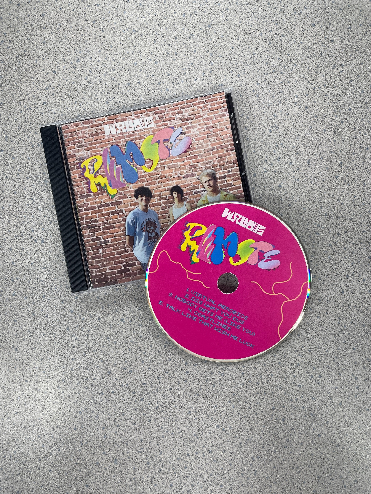
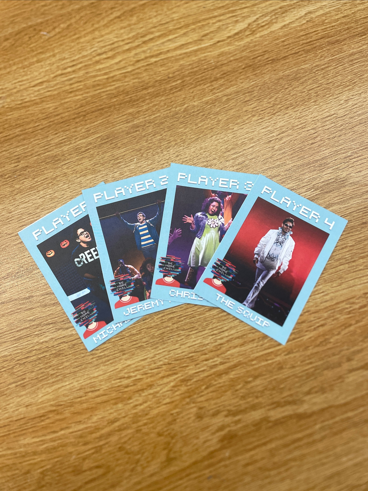
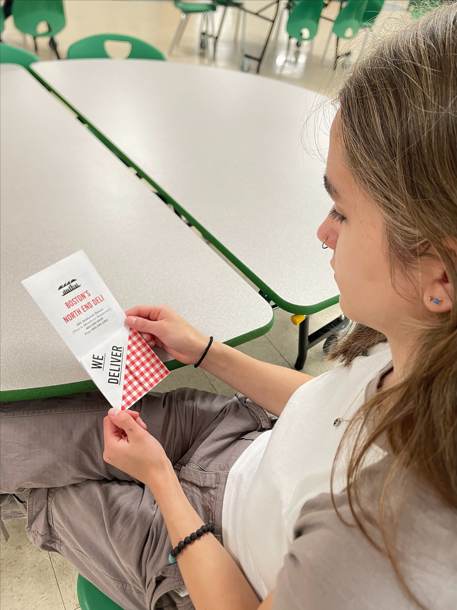

This page of my portfolio is dedicated to the work I completed for my CRTC (Concord Regional Technical Center) Graphic Design and Creative Media program in high school.

I used Adobe Photoshop and Illustrator to create a new CD case, billfold, disc, and U card for the Remote EP by Wallows. Not shown in the picture is the billfold which features the lyrics to each song combined with visuals inspired by the music videos from the EP.

This is a set of trading cards I made using Photoshop and formatted for printing using Illustrator. Each card features a photo of a character from the musical Be More Chill, that character's name, and the show's logo.

Featured in this photo is a menu I designed using Illustrator and InDesign. The goal of this project was to use folds to create a unique menu design for a deli.